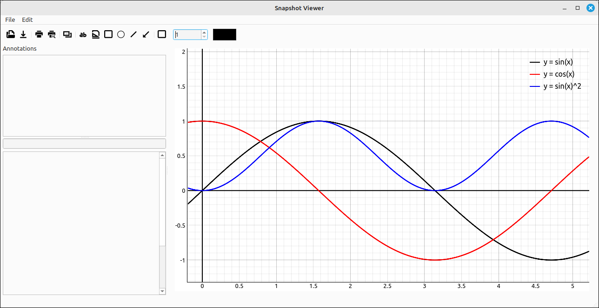
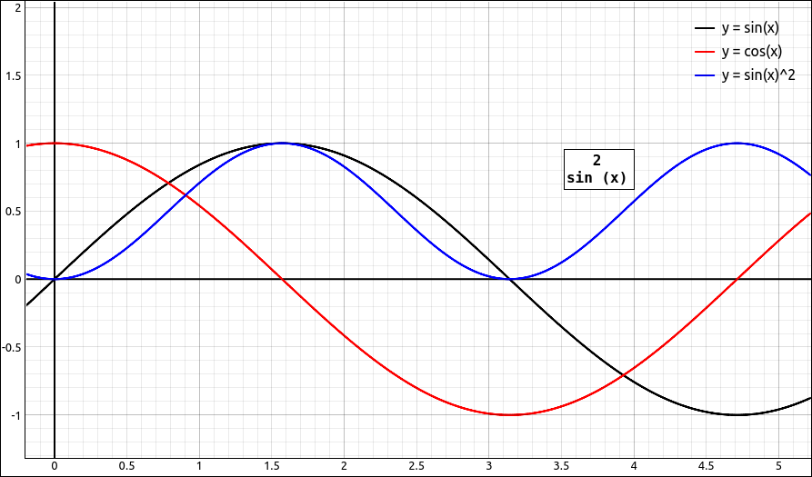
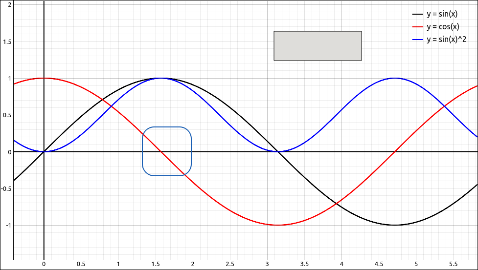
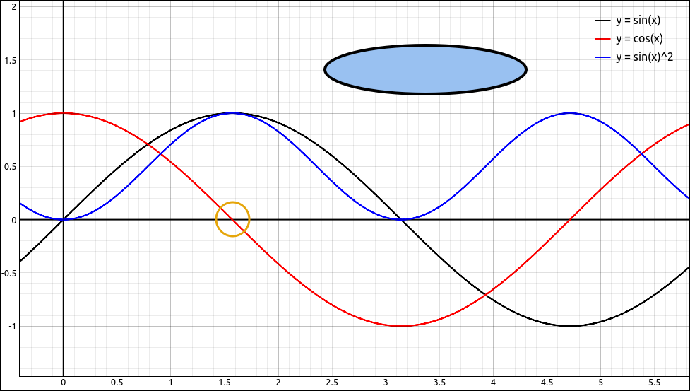

Snapshot Viewer#
Introduction#
This opens the current graph in the Snapshot Viewer tool. The Snapshot Viewer tool is for incorporating simple annotations on the current graph. When the tool is opened the current graph is loaded as an image into the image area. The user can then select to add simple annotations to the image for use in course notes, presentations, and other documents.

Snapshot Viewer#
Tool Layout#
The tool layout is fairly simple, a standard menu and toolbar at the top, the main graph on the right, a list of annotations that the user inserted in the upper left, and the properties of the selected annotation in the lower left.

Snapshot Viewer Layout#
Annotations#
The tool allows the user to add several simple annotations to the image. Each of the annotation objects have their own attributes. If the user requires more annotation options they can use this tool for some of the easier annotations and then copy the image into a more sophisticated image editor to finish their work.
The order that the annotations are drawn is not determined by the order that they are input (as with most graphical editors), the order is determined by the type of annotation that is being input. The graphical order from top to bottom is,
Text Boxes
Mathematical Expressions
Rectangles
Ellipses
Lines
Arrows
Images
Text Boxes#
A text box annotation is just plain (unformatted) text that is included in the image. This annotation allows the user to insert just the text or include a rectangular box around the text.

Text Box#
Text Box Options#
Show: This is a check box that allows the user to toggle the showing of the annotation. You can also double-click the annotation item in the annotation lest to toggle the showing of the annotation.
Text: This is the text that is displayed. It is simply plain text but can be multiline.
Text Color: This is the color of the displayed text. The displayed text is unformatted so you cannot have different colors for different characters in the text.
Font: This is the font that is being used for the text. You may select any font that is currently on your system for this option.
Font Size: This is the pixel size of the displayed text. Although this can be set along with font we included it in the set of options since it requires less steps to change and will probably be used more often than changing the font.
Anchor X Position: This is the horizontal pixel position of the anchor point for the text box, which is the upper left corner of the text box.
Anchor Y Position: This is the vertical pixel position of the anchor point for the text box, which is the upper left corner of the text box.
Justify: This is the text justification within the text box.
Include Box: This is a check box that allows the user to include a box around the annotation. The other options in that section adjust the appearance of the box if it is included.
Background Color: This is the color of the background for the box.
Border Color: This is the color of the box border.
Border Width: This is the pixel width of the border.
Horizontal Padding: This is the additional horizontal padding used for the text box. This is included with the box option on or off but really is noticeable only when the box is selected.
Vertical Padding: This is the additional vertical padding used for the text box. This is included with the box option on or off but really is noticeable only when the box is selected.
Rotation: This is the amount of rotation that is applied to the text box.
Transparency: This is the amount of transparency that is applied to the text box.
Mathematical Expressions#
A mathematical expression annotation is a formatted mathematical style expression like the mathematical expressions that are displayed in the CAS portion of this program. This annotation allows the user to insert just the expression or include a rectangular box around the text.

Mathematical Expression#
Mathematical Expression Options#
Show: This is a check box that allows the user to toggle the showing of the annotation. You can also double-click the annotation item in the annotation lest to toggle the showing of the annotation.
Formula: This is the formula that is displayed. The syntax of the formulas is the same as the syntax used to input an expression into the CAS. There are a couple exceptions to this rule. First, the snapshot viewer tool is decoupled from the CAS, so the expression designations like
R1,R2, … cannot be used. The tool also does not have tools for inputting matrices or piecewise expressions. On the other hand, this tool is not “modal”, meaning that you can click on the main window to go back to the CAS. If there is an expression in the CAS that you want in an expression box you can click on the main window, select the expression you wish, copy the expression, switch back to the snapshot viewer, and finally paste it into the formula edit box. These expressions will be in SymPy syntax and possible look a bit complicated, especially for matrices and piecewise expressions. Note that if the input formula is not correct in syntax the expression will be “Error”.Text Color: This is the color of the displayed formula.
Bold: A check box that toggles the formula in a boldfaced font. The actual font that is used is automatically selected from your system’s mono-spaced fonts. Just as with the CAS, the formulas need to use a mono-spaced font so that things like exponents and brackets line up.
Font Size: This is the pixel size of the displayed text.
Anchor X Position: This is the horizontal pixel position of the anchor point for the formula box, which is the upper left corner of the text box.
Anchor Y Position: This is the vertical pixel position of the anchor point for the formula box, which is the upper left corner of the text box.
Include Box: This is a check box that allows the user to include a box around the annotation. The other options in that section adjust the appearance of the box if it is included.
Background Color: This is the color of the background for the box.
Border Color: This is the color of the box border.
Border Width: This is the pixel width of the border.
Horizontal Padding: This is the additional horizontal padding used for the formula box. This is included with the box option on or off but really is noticeable only when the box is selected.
Vertical Padding: This is the additional vertical padding used for the formula box. This is included with the box option on or off but really is noticeable only when the box is selected.
Wrap Column: This is where the mathematical format string is wrapped to the next line.
Rotation: This is the amount of rotation that is applied to the text box.
Transparency: This is the amount of transparency that is applied to the text box.
Rectangles#
A rectangle annotation is simply an open or closed rectangle that can have rounded corners. These are good for pointing out interesting aspects of a graph or for putting a fancier border around some text or mathematical expression. If you do use it for a text or expression border note that these objects are not linked to text or expression boxes so they need to positioned independently.

Rectangle Annotation#
Rectangle Options#
Show: This is a check box that allows the user to toggle the showing of the annotation. You can also double-click the annotation item in the annotation lest to toggle the showing of the annotation.
Color: This is the color of the border of the rectangle.
Line Width: This is the pixel width of the border of the rectangle.
Anchor X Position: This is the horizontal pixel position of the anchor point for the rectangle, which is the upper left corner of the rectangle.
Anchor Y Position: This is the vertical pixel position of the anchor point for the rectangle, which is the upper left corner of the rectangle.
Width: This is the pixel width of the rectangle.
Height: This is the pixel height of the rectangle.
Fill Rectangle: This is a check box that controls if the inside of the rectangle is filled or transparent.
Fill Color: If the fill option is selected this is the color of the inside area.
Corner Radius: This is the radius of the curve used for the corners of the rectangle. The rectangle is really a rounded rectangle. If the corner radius is 0 then the rectangle has sharp corners and the larger this value the more circular the corners of the rectangle become.
Ellipses#
An ellipse annotation is simply an open or closed ellipse. These are good for pointing out interesting aspects of a graph or for putting a fancier border around some text or mathematical expression. If you do use it for a text or expression border note that these objects are not linked to text or expression boxes so they need to positioned independently.

Ellipse Annotation#
Ellipse Options#
Show: This is a check box that allows the user to toggle the showing of the annotation. You can also double-click the annotation item in the annotation lest to toggle the showing of the annotation.
Color: This is the color of the border of the ellipse.
Line Width: This is the pixel width of the border of the ellipse.
Anchor X Position: This is the horizontal pixel position of the anchor point for the ellipse, which is the upper left corner of the box containing the ellipse.
Anchor Y Position: This is the vertical pixel position of the anchor point for the ellipse, which is the upper left corner of the box containing the ellipse.
Width: This is the pixel width of the ellipse.
Height: This is the pixel height of the ellipse.
Fill Ellipse: This is a check box that controls if the inside of the ellipse is filled or transparent.
Fill Color: If the fill option is selected this is the color of the inside area.
Lines#
An line annotation is simply a line segment from one position on the graph to another. These are good for pointing to places on the graph, especially combined with text or expression annotations. If you do use it with a text or expression note that these objects are not linked to text or expression boxes so they need to positioned independently.

Line Annotation#
Line Options#
Show: This is a check box that allows the user to toggle the showing of the annotation. You can also double-click the annotation item in the annotation lest to toggle the showing of the annotation.
Color: This is the color of the line.
Line Width: This is the pixel width of the line.
Start X Position: This is the horizontal pixel position of the starting point for the line.
Start Y Position: This is the vertical pixel position of the starting point for the line.
End X Position: This is the horizontal pixel position of the ending point for the line.
End Y Position: This is the vertical pixel position of the ending point for the line.
Arrows#
An arrow annotation is simply a line segment from one position on the graph to another with the addition of an arrowhead at the ending position. These are good for pointing to places on the graph, especially combined with text or expression annotations. If you do use it with a text or expression note that these objects are not linked to text or expression boxes so they need to positioned independently.

Arrow Annotation#
Arrow Options#
Show: This is a check box that allows the user to toggle the showing of the annotation. You can also double-click the annotation item in the annotation lest to toggle the showing of the annotation.
Color: This is the color of the arrow.
Line Width: This is the pixel width of the arrow.
Start X Position: This is the horizontal pixel position of the starting point for the arrow.
Start Y Position: This is the vertical pixel position of the starting point for the arrow.
End X Position: This is the horizontal pixel position of the ending point for the arrow.
End Y Position: This is the vertical pixel position of the ending point for the arrow.
Arrow Size: This is a pixel size of the size of the arrowhead.
Arrow Angle: This is the angle used at the point for the angular width of the arrowhead.
Images#
An image annotation is an image that is rendered inside the graph. This option is useful for including better mathematical renderings using an outside equation editor to create a mathematical expression as an image. It can also be used to insert logos and images that cn be superimposed over the graph. This option allows the user to make the image semitransparent so that the graph can be seen through the image.

Image Annotation#
Image Options#
Show: This is a check box that allows the user to toggle the showing of the annotation. You can also double-click the annotation item in the annotation lest to toggle the showing of the annotation.
Image: This is the image that is displayed. There is a small toolbar above the image that allows the user to past an image from the clipboard or load an image from an image file. Note that large images can consume computer resources and be slow to process. Keep these images reasonable in size, if you wish to load in a large image it may be better to scale the image down with image editing software before loading the image into the annotator.
Anchor X Position: This is the horizontal pixel position of the anchor point for the text box, which is the upper left corner of the text box.
Anchor Y Position: This is the vertical pixel position of the anchor point for the text box, which is the upper left corner of the text box.
Scaling: This sets the scaling factor of the image.
Aspect Ratio: This sets the aspect ratio of the image.
Flip Horizontally: This reflects the image horizontally.
Flip Vertically: This reflects the image vertically.
Rotation: This is the amount of rotation that is applied to the image.
Use Transparent Color: This enables a transparent color, every pixel in the image that matches the transparent color is set to transparent.
Transparent Color: This is the color to use as the transparent color if the option is enabled. Every pixel in the image that matches the transparent color is set to transparent.
Image Transparency: This is the amount of transparency that is applied to the entire image.
Include Box: This is a check box that allows the user to include a box around the annotation. The other options in that section adjust the appearance of the box if it is included.
Padding Color: This is the color of the background for the box.
Border Color: This is the color of the box border.
Border Width: This is the pixel width of the border.
Horizontal Padding: This is the additional horizontal padding used for the box.
Vertical Padding: This is the additional vertical padding used for the box.
Latex Formula Editor#
If you wish to inset LaTeX rendered images into the image annotations a very nice stand-alone tool has been embedded into this help system. It is a (very slight) alternation of the Latex Formula Editor by moskensoap on GitHub.com Copyright (c) 2025, downloaded (6/2026).
Tool Options#
In addition to the annotations described above, the menu and toolbar options are,
Open Project: This opens a project file which contains the base image and all the annotations that were created with the image.
Save Project As: This saves a project file which contains the base image and all the annotations that were created with the image.
New Blank Base Image: This will create a new blank image to use for the base image in the annotator. In most cases you will be annotating the graph that was loaded from the 2D or 3D graphics window, or an already existing image, either from a file or from another program. So usually, you will be opening or pasting a base image into the program but that may be some cases where you want a blank canvas to work with.
Open Base Image: Opens an image file and loads it into the image area. This tool is primarily used with the graph that it opens with, but the tool has the ability to load and annotate external images.
Paste Base Image: Pastes an image from the clipboard into the image area.
Copy Image: Copies the current image to the system clipboard.
Save Image As: Saves the current image to a file. When invoked, a save as dialog box will appear asking the user for a filename. The default will save the image as a PNG file (probably the best format for graphs), if the user includes a known extension (such as .jpg or .bmp) the program will save the image in that format.
Print: This will send the image to the printer. When invoked, a dialog box will appear allowing the use to set the printing options.
Print Preview: This will open the image in a print preview dialog box that will allow the user to view the printed image as well as set other printing attributes and print the image.
Delete Annotation: Deletes the currently selected annotation.
Clear Annotation List: This option deletes all of the annotations.
Toggle Border: Toggles the graphing of a border around the entire image.
Border Width: Sets the width of the border if the border is set to display. This option is only available on the toolbar.
Border Color: Sets the color of the border if the border is set to display. This option is only available on the toolbar.